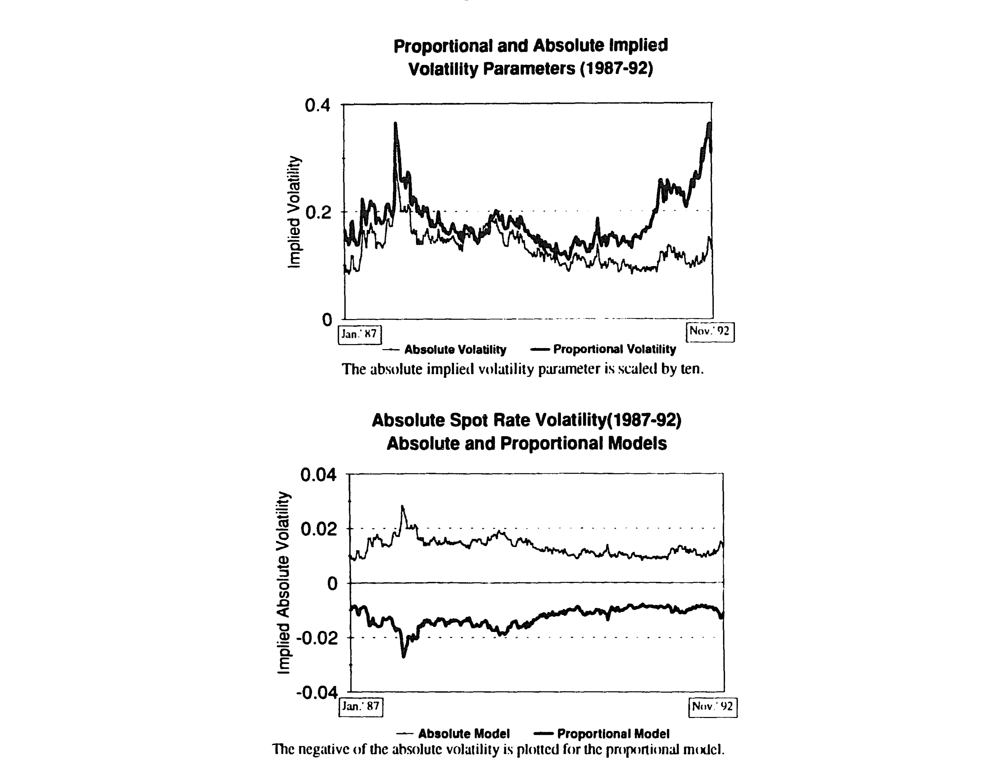
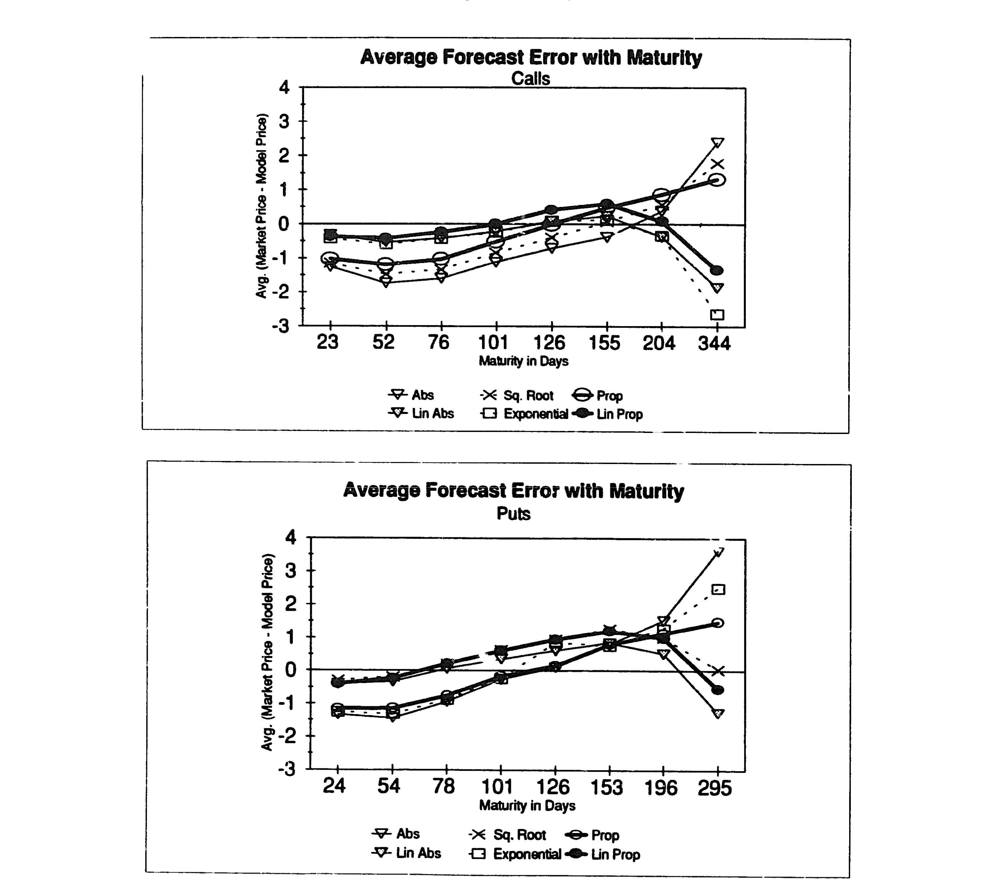
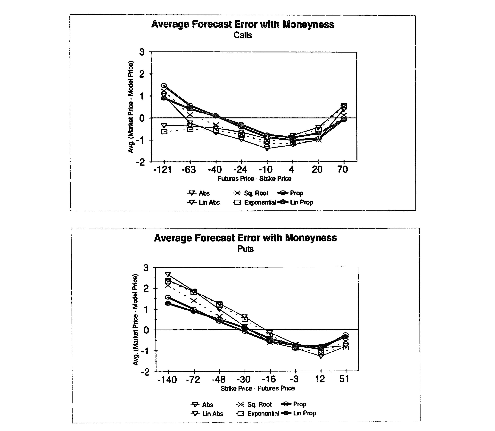
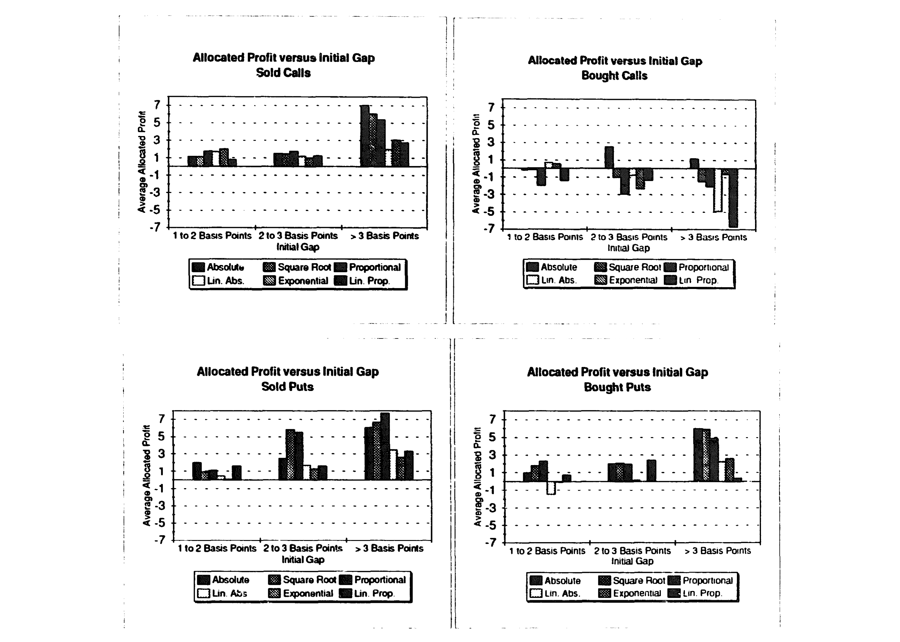
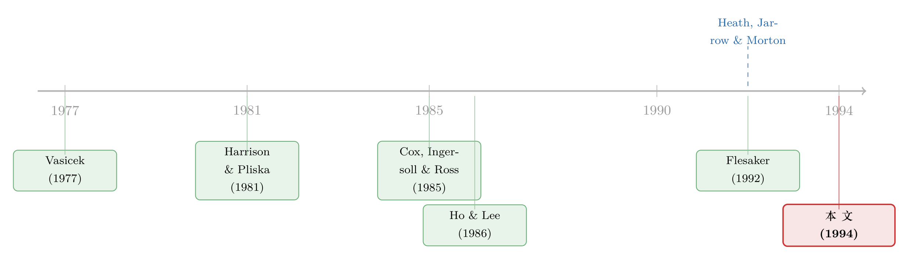

选模型，其实是在选一条波动率曲线——六个 HJM 利率期权模型的一场对账
本文读的是 Amin & Morton (1994, Journal of Financial Economics)：在 Heath-Jarrow-Morton 框架下，债券与期权的全部定价信息都浓缩进一条「波动率函数」里。作者用 1987–1992 年的欧洲美元期货期权，逐日反解出六种波动率函数的隐含参数，发现它们都能把价格拟合得极好——用「滞后一天」的隐含波动率，平均每天同时给 18.5 张期权定价、平均绝对误差只有 1.5 到 2 个基点；可越是拟合得好，越藏着一件尴尬的事：所有六个模型，都留下了系统性的执行价与到期期限偏差。
1 引言：一个被「省掉」的麻烦
做过期权定价的人都知道 Black-Scholes 公式之所以好用，是因为它把一堆难缠的东西一笔勾销了——你不需要知道股票的期望收益率，不需要假设投资者偏好，你只需要一个数：波动率。定价权完全交给了「方差」，而不是「漂移」。
利率衍生品的世界本来没这么干净。早期的利率模型——Vasicek (1977)、Brennan & Schwartz (1979)、Cox, Ingersoll & Ross (1985)——都是从「短期利率（spot rate）服从某个随机过程」出发，再把整条期限结构反推出来。这套做法对理解债券之间的关系很有用，可一旦拿去给利率期权定价，就处处碰壁：模型内生地决定了期限结构，于是几乎拟合不上市场上当前真实的收益率曲线；为了硬凑，又得塞进一堆随时间变化的参数（Hull & White 1990 就是这么干的），而这些参数本身又出了名地难估（CIR 模型的参数估计，不同研究者能给出差得离谱的结果）。
然后，Ho & Lee (1986) 换了个思路：不去内生地「解释」期限结构，而是把今天的整条贴现债券价格曲线当成已知的输入，只去刻画它此后如何无套利地演化。Heath, Jarrow & Morton（下称 HJM，1992）把它推到连续时间，并允许远期利率的变动形式「几乎任意」地指定。
这一步的意义，正是把 Black-Scholes 的那个好处搬到了利率世界——
在 HJM 框架里，今天的期限结构是给定的，无套利又把漂移锁死了。于是一旦你选定了「波动率函数」，所有债券、所有期权的价格就全部被确定下来。波动率函数，就是模型本身。
于是一个自然的问题浮出水面：既然 HJM 允许波动率函数「几乎任意」，那么——到底哪一条波动率曲线，才最像真实的市场？ 这正是本文要回答的问题。
2 模型：为什么「选好波动率，就什么都定了」
我们值得把这件事一步步讲清楚，因为它是全文的支点。
HJM 直接对每一个到期期限 \(T\) 的远期利率 \(f(t,T)\) 同时设定演化方程。记 \(W(t)\) 为一维标准布朗运动，则
$$ df(t,T) = \alpha(t,T,\cdot)\,dt + \sigma(t,T,f(t,T))\,dW(t) $$
这里 \(\alpha\) 是漂移、\(\sigma\) 是扩散（即波动率）系数。注意它和短期利率模型的根本区别：传统模型只直接给一个利率（短端）建模，其余利率靠它推；而 HJM 一次性地、外生地给所有期限的远期利率写好了方程。
接着，一个自然的问题是：漂移 \(\alpha\) 能自由选吗？不能。在风险中性测度下，无套利施加了一个铁的约束——
这条式子是 HJM 的灵魂：漂移完全由波动率决定。你只要写下 \(\sigma(\cdot)\)，\(\alpha(\cdot)\) 就被这个积分式唯一地算出来了。换句话说，整个模型里唯一「自由」的，就是波动率函数 \(\sigma\)。
然后，定价就顺理成章。期货价格在风险中性测度下是鞅（因为开仓不需要投入资金）：
$$ \phi(t) = E_t\!\left[F_T(T)\right] $$
欧式期权的价格则是贴现后的期望支付：
$$ C(t) = E_t\!\left[\exp\!\left(-\int_t^T r(u)\,du\right)G(T)\right] $$
美式期权再多一层「最优停时」：
$$ C(t) = \sup_{\theta\in\mathcal{T}[t,T]} E_t\!\left[G_\theta(\theta)\exp\!\left(-\int_t^\theta r(u)\,du\right)\right] $$
到这里，论证的链条已经闭合：给定今天的期限结构（输入）＋ 一条波动率函数（唯一的选择）→ 无套利锁死漂移 →（用一个路径依赖的二叉树做后向归纳）→ 所有期货与期权的价格。
但真正关键的一步麻烦，恰恰藏在「路径依赖」四个字里。一般的 HJM 模型不是马尔可夫的：一个「先涨后跌」的利率路径，未必回到「先跌后涨」的同一条期限结构。这意味着二叉树不重合，计算量随步数指数级爆炸。正是这个计算障碍，让 HJM 问世多年几乎无人做实证——在本文之前，只有 Flesaker (1992) 和 Cohen (1991) 两篇，而 Flesaker 为了算得动，只测了波动率为常数的 Ho-Lee 那一个特例。本文（借助 Amin & Bodurtha 1994 等发展出的数值方法）是第一个系统地实证、并检验一大类路径依赖 HJM 模型的研究。
2.1 六条候选曲线
既然模型 = 波动率函数，本文索性挑了六种具体的函数形式来比。它们全都被同一个四参数母函数所「嵌套」：
$$ \sigma(t,T,f(t,T)) = \left[\sigma_0 + \sigma_1 (T-t)\right]\exp\!\left[-\lambda (T-t)\right] f(t,T)^{\gamma} $$
四个参数 \(\sigma_0,\sigma_1,\lambda,\gamma\) 分别管：整体水平、随期限的线性项、随期限的指数衰减、对利率水平的弹性。六个模型就是它的六个特例：
$$ \begin{aligned} &\text{(1) Absolute (Ho-Lee):} && \sigma(\cdot)=\sigma_0\\ &\text{(2) Square Root:} && \sigma(\cdot)=\sigma_0\, f(t,T)^{1/2}\\ &\text{(3) Proportional:} && \sigma(\cdot)=\sigma_0\, f(t,T)\\ &\text{(4) Linear Absolute:} && \sigma(\cdot)=\sigma_0+\sigma_1 (T-t)\\ &\text{(5) Exponential (Vasicek):} && \sigma(\cdot)=\sigma_0\exp[-\lambda(T-t)]\\ &\text{(6) Linear Proportional:} && \sigma(\cdot)=\left[\sigma_0+\sigma_1 (T-t)\right] f(t,T) \end{aligned} $$
前三个是单参数模型，后三个是双参数。值得玩味的是，这六条曲线恰好覆盖了文献里几种最经典的直觉：(1) 的常数波动率就是 Ho-Lee；(5) 的指数衰减，对应 Vasicek (1977) 的 Ornstein-Uhlenbeck 短期利率（Brenner 1989 给了证明）；(3) 的「波动率正比于利率水平」则保证了利率永远为正——这正是高斯型模型（如 Vasicek）被诟病的地方：它们允许利率以正概率变负。
作者没有去硬估四个参数。他们试过同时反解 \(\sigma_0\) 与 \(\gamma\)，结果参数极不稳定、标准误比参数本身还大、还高度依赖迭代初值。于是干脆逐个钉死具体形式，分别检验——这是务实的取舍，也埋下了后文「模型怎么挑都不完美」的伏笔。
3 数据与「隐含波动率」
为什么是欧洲美元（Eurodollar）期货期权，而不是更出名的国债期货期权？这是个被低估的好选择。欧洲美元合约极其流动，且——这是关键——能直接拼出一条与期权同时点的、完整的初始远期利率曲线（HJM 恰恰需要这条曲线做输入）；而国债期货因为底层券有 15 年以上的到期期限、交割期权又复杂（Gay & Manaster 1986），根本拼不出这条曲线。
数据来自 CME 的逐笔成交库，区间为 1987 年 1 月 1 日至 1992 年 11 月 10 日。作者取每天 8:30am CST 的最后成交价作为同步价格，得到 1,483 个交易日、27,368 个期权观测，平均每天 4.001 张期货、9.3 张看涨、9.2 张看跌。一个基点（tick）对应 $25。
所谓「隐含波动率」，在这里不再是 Black-Scholes 里那个标量，而是上面某条波动率函数的参数。做法是：用市场期权价格去反解出让模型价格最贴近市场的参数值，得到一条逐日的「隐含波动率参数」时间序列，再去看它的时序性质。

Figure 1: Implied volatility parameters and absolute implied volatility for absolute and proportional
图 1 把绝对（Absolute）与比例（Proportional）两个模型反解出的隐含波动率画了出来。你能直观看到：参数确实随时间波动，但相对平稳——这正是后面「用昨天的参数定今天的价」之所以可行的前提。
4 反转：拟合得越好，错得越有规律
到这一步，故事本该是个圆满的结局：模型能用、参数稳定、拟合极好。作者用滞后一天的隐含波动率（即昨天反解出的参数，拿来定今天的价——这一步刻意避免了「用今天的价去拟合今天的价」的数据窥探）做检验，结果漂亮：一、两参数模型平均每天同时给 18.5 张期权定价，平均绝对误差仅 1.5 到 2 个基点。对一个完全样本外的预测来说，这个精度相当惊人。
但真正关键的一步，是作者没有就此打住，而是去问：这点误差，是纯随机的噪声，还是有结构的偏差？
答案是后者，而且六个模型无一幸免。误差不是均匀地撒在零附近，而是随两个维度系统性地漂移：
其一，沿到期期限。 定价误差随期权到期期限呈现规律性的形态（图 2）——这意味着某些期限的期权被模型系统性高估、另一些被低估。

Figure 2: Forecast error as a function of maturity
其二，沿执行价（moneyness）。 同样的系统性偏差也出现在「在值/平值/虚值」这条轴上（图 3）。这其实就是股票期权世界里那个著名的「波动率微笑/偏斜」在利率期权里的影子：单一波动率函数无法同时拟合不同执行价的期权。

Figure 3: exhibits the pattern of mispricing as a function of moneyness. The linear
这就是全文最有意思的反转：「拟合得好」和「设定正确」是两回事。 一个误设定（misspecified）的模型，照样可以把平均误差压到两个基点以内；可它一旦遇到极端执行价或极端期限，就会以可预测的方向出错。而可预测的错误，恰恰是模型不对的铁证——也是潜在的套利机会。
（关于「换一把尺子，利率波动率的结论就可能翻案」这一主题，可参见《波动率藏在哪里？——一篇被「换了把尺子」就翻案的利率期限结构论文》 与《收益率曲线拟合得再好，也可能对波动率「充耳不闻」》。）
5 最后一问：这些「错误」是真的吗？
发现系统性偏差，还不足以下结论。一个谨慎的怀疑是：所谓「偏差」会不会只是买卖价差、非同步交易这类微观结构噪声的产物，根本无法落袋为安？
于是作者设计了最后一道检验——简单的交易策略：在每天反解出隐含波动率之后，用它在当天稍晚的时点去买入模型认为「便宜」的、卖出「贵」的期权（用滞后信息确保可执行、无窥探）。如果偏差是真的，这些策略就该赚钱；如果只是噪声，就赚不到。

Figure 4: Profits from trading strategies to exploit mispriced options
图 4 给出了这些策略的盈亏。结论是：模型识别出的部分错误定价确实能被简单策略捕捉——它们不是纯噪声，而是真实的、可被利用的定价偏离。这反过来又强化了前面那个判断：六个模型都有真实的、而非统计幻觉式的设定缺陷。
由此，作者给出务实的建议：在研究与实务中，没必要迷信复杂模型——简单的一、两参数 HJM 设定在拟合上已经足够好；而既然所有模型都留有系统性偏差，选择时更应权衡计算成本与偏差结构，而不是盲目追求参数个数。
6 文献脉络
把这条线索捋一捋，故事其实很清晰。最早，利率建模是「短端驱动」的：Vasicek (1977) 用 Ornstein-Uhlenbeck 过程刻画短期利率，Brennan & Schwartz (1979) 加了一个长期利率，Cox, Ingersoll & Ross (1985) 给了一般均衡的基础。它们理论优美，却在拟合当前期限结构和给期权定价上屡屡受挫。
转折来自 Ho & Lee (1986)：不再「解释」期限结构，而是把它当输入、只刻画其无套利演化。这套思想的数学地基，是 Harrison & Pliska (1981) 的鞅定价理论。HJM (1992) 把它推广到连续时间，让波动率函数几乎可以任意指定——也正是在这里，「模型 = 波动率函数」这个命题被彻底确立。但 HJM 的路径依赖让实证极其困难，所以在本文之前，实证的版图近乎空白（Flesaker 1992 只测了 Ho-Lee 特例）。本文，正是站在「第一次系统检验一大类 HJM 模型」的位置上。

7 评论与延伸（Q&A + 研究方向）
(a) 几个可能的疑问
Q：HJM 模型里「波动率函数就是一切」，那它和 Black-Scholes「单一波动率」到底差在哪？
差在维度。Black-Scholes 用一个标量描述单一资产的波动；HJM 的波动率函数 \(\sigma(t,T,f)\) 必须描述整条期限结构曲线如何随机演化——它是期限 \(T-t\)（乃至利率水平 \(f\)）的函数。所以本文的「隐含波动率」反解出来的是一组参数（如 \(\sigma_0,\sigma_1,\lambda\)），而非一个数。
Q：「无套利锁死漂移」这件事，凭什么成立？
凭风险中性测度下「所有可交易证券的瞬时期望收益都等于短期利率」这一条。把它施加到债券价格上，就逼出了正文那个漂移 = 波动率 × 未来波动率积分的约束。直觉上，远期利率波动越大，为了不产生套利，其漂移就必须做相应补偿——这和 Black-Scholes 里漂移被无风险利率取代是同一回事的「期限结构版」。
Q：用「滞后一天」的隐含波动率，是不是太刻意了？
恰恰相反，这是方法论上的洁癖，也是本文最值得学的地方。若用当天价格反解参数、再用同一参数去「预测」当天价格，那是循环论证、必然拟合极好。用昨天的参数定今天的价，才是真正的样本外检验——
1.5–2个基点的误差因此才有说服力。
Q：六个模型都能压到两个基点，那「系统性偏差」还重要吗？
重要，而且是全文的命门。平均误差小，说明模型「平均而言」对；系统性偏差说明它「在结构上」错。后者意味着：在特定执行价/期限上，错误是可预测的方向性偏离——这正是误设定的指纹，也是套利的入口。图 4 的交易策略盈利，证明这些偏差不是噪声。
Q：为什么不直接把四参数母函数一次估到底，岂不更灵活？
作者试过，结果参数高度不稳定、标准误超过参数本身、还依赖初值。短期期货期权（多在两年内到期）里，根本没有足够的期限变异去同时识别四个参数。这是一个诚实的负面结果，也解释了为什么他们退而求其次、逐个钉死形式来比。
Q：为什么选欧洲美元而不是国债期货期权？这会不会限制结论的普适性？
选它是因为它能拼出与期权同步的完整远期曲线（HJM 的必要输入），且无国债合约那些复杂的交割/择时期权。代价是期限较短（多在一年内），所以本文只做单因子 HJM——正如 Dybvig (1990) 所言，五年内的远期利率变异几乎能被单一因子解释。要外推到长端或多因子，结论需重新检验。
(b) 几个可能的研究问题与提案
1. 把这套「隐含波动率函数」框架搬到公司债/信用衍生品。 【经济故事】HJM 的逻辑天然可推广到可违约期限结构：给定今天的信用利差曲线，无套利同样能锁死违约强度的漂移。那么，CDS 期权或可赎回公司债里隐含的「信用波动率函数」，会不会也在「评级/久期」维度上留下与本文同构的系统性偏差？ 【可行性】中。数据上 CDS 期权流动性远不如欧洲美元，但投资级 CDX/iTraxx 期权可用；识别上可复用本文的「滞后隐含参数 + 样本外定价 + 交易策略」三段式。
2. 系统性偏差是否被「流动性」驱动？ 【经济故事】本文把偏差归因于波动率函数的误设定。但虚值/长期期权恰恰也是最不流动的——那么执行价/期限偏差里，有多大一块其实是流动性溢价而非模型错误？ 【可行性】高。在原始 CME 逐笔数据上，可用成交量、买卖价差、报价深度作为流动性代理，把定价误差对「模型 moneyness/maturity」与「流动性」同时回归，看偏差在控制流动性后是否衰减。这是一个干净、可做的横截面检验。
3. 外资/机构持有人结构与利率期权偏差。 【经济故事】不同投资者群体对不同执行价的需求压力（如机构买保护性虚值期权）可能正是「微笑」的需求侧来源。若能匹配持仓结构，便能检验本文的系统性偏差中有多少是「需求压力」造的。 【可行性】低到中。利率期权的持仓人结构数据极难获取（CFTC 的持仓报告颗粒度有限），识别上也难把需求与模型误设定干净地分开；属于「有意思但 data-constrained」。
4. 损失函数与模型排名的稳健性。 【经济故事】本文用「绝对定价误差」给模型打分。但若改用相对误差、或对在值期权加权，模型排名会不会翻盘？「最优波动率函数」可能本就是损失函数的函数。 【可行性】高。仅需在已有定价残差上换算不同损失函数即可，无须新数据，是一个低成本、高确定性的稳健性练习。
8 我的判断
本文的贡献，与其说是「找到了最好的利率模型」，不如说是为整个 HJM 实证研究铺了第一块地基，并立下了一个至今仍成立的方法论标尺：用滞后隐含参数做样本外定价、再用交易策略检验偏差是否「为真」。它最深刻的一句潜台词是——在 HJM 世界里，挑模型就是挑一条波动率曲线，而拟合优度并不等于设定正确。这一点，今天读结构化信用模型、读机器学习定价时，依然值得反复咀嚼。
对识别的担忧有两处。其一，样本只覆盖一年内到期、单因子可解释的欧洲美元，结论能否外推到长端与多因子并不清楚（作者自己也坦承无法可靠分离两个因子）。其二，「系统性偏差 = 模型误设定」这个推断，没有充分排除流动性与微观结构噪声——虚值/长期期权既是模型最易出错处，也是最不流动处，两者在数据里是共线的，这正是我上面第 2 个研究提案想拆开的东西。
后续我最想看到的，是把这套「隐含波动率函数 + 系统偏差诊断」框架迁到信用市场：在可违约期限结构里，今天最先进的结构模型，会不会也像本文的六条曲线一样，拟合得天衣无缝、却在评级与久期维度上错得很有规律？（这一方向与《结构模型给债券定价，错的从来不是「太低」，而是「太散」》 的精神一脉相承。）若答案为「是」，那本文三十年前的洞见，就还远没有过期。
参考文献
Amin, K. I. and J. N. Bodurtha, Jr. (1994). Discrete-time valuation of American options with stochastic interest rates. Review of Financial Studies, forthcoming.
Brennan, M. J. and E. S. Schwartz (1979). A continuous time approach to the pricing of bonds. Journal of Banking and Finance 3, 133–155.
Cox, J. C., J. E. Ingersoll, and S. A. Ross (1985). A theory of the term structure of interest rates. Econometrica 53, 385–407.
Dybvig, P. H. (1990). Bond and bond option pricing based on the current term structure. Technical report, Washington University in St. Louis.
Flesaker, B. (1992). Testing and estimation of the constant volatility HJM term structure model. Technical report, University of Illinois.
Harrison, J. M. and S. R. Pliska (1981). Martingales and stochastic integrals in the theory of continuous trading. Stochastic Processes and their Applications 11, 215–260.
Heath, D., R. Jarrow, and A. Morton (1992). Bond pricing and the term structure of interest rates: A new methodology. Econometrica 60, 77–105.
Ho, T. S. Y. and S.-B. Lee (1986). Term structure movements and pricing interest rate contingent claims. Journal of Finance 41, 1011–1029.
Vasicek, O. (1977). An equilibrium characterization of the term structure. Journal of Financial Economics 5, 177–188.